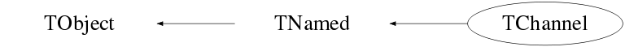

Function Members (Methods)
public:
| virtual | ~TChannel() |
| void | TObject::AbstractMethod(const char* method) const |
| void | AddCFDCoefficient(double temp) |
| static void | AddChannel(TChannel*, Option_t* opt = "") |
| void | AddCTCoefficient(double temp) |
| void | AddEFFCoefficient(double temp) |
| void | AddENGCoefficient(Float_t temp) |
| void | AddLEDCoefficient(double temp) |
| void | AddTIMECoefficient(double temp) |
| virtual void | TObject::AppendPad(Option_t* option = "") |
| virtual void | TObject::Browse(TBrowser* b) |
| double | CalibrateCFD(double) |
| double | CalibrateCFD(int) |
| double | CalibrateEFF(double) |
| double | CalibrateENG(double) |
| double | CalibrateENG(double, int temp_int) |
| double | CalibrateENG(int, int temp_int = 0) |
| double | CalibrateLED(double) |
| double | CalibrateLED(int) |
| double | CalibrateTIME(double) |
| double | CalibrateTIME(int) |
| ULong_t | TObject::CheckedHash() |
| static TClass* | Class() |
| virtual const char* | TObject::ClassName() const |
| virtual void | Clear(Option_t* opt = "") |
| virtual TObject* | TNamed::Clone(const char* newname = "") const |
| virtual Int_t | TNamed::Compare(const TObject* obj) const |
| static bool | CompareChannels(const TChannel&, const TChannel&) |
| virtual void | TNamed::Copy(TObject& named) const |
| virtual void | TObject::Delete(Option_t* option = "")MENU |
| static void | DeleteAllChannels() |
| void | DestroyCalibrations() |
| void | DestroyCFDCal() |
| void | DestroyCTCal() |
| void | DestroyEFFCal() |
| void | DestroyENGCal() |
| void | DestroyLEDCal() |
| void | DestroyTIMECal() |
| virtual Int_t | TObject::DistancetoPrimitive(Int_t px, Int_t py) |
| virtual void | TObject::Draw(Option_t* option = "") |
| virtual void | TObject::DrawClass() constMENU |
| virtual TObject* | TObject::DrawClone(Option_t* option = "") constMENU |
| virtual void | TObject::Dump() constMENU |
| virtual void | TObject::Error(const char* method, const char* msgfmt) const |
| virtual void | TObject::Execute(const char* method, const char* params, Int_t* error = 0) |
| virtual void | TObject::Execute(TMethod* method, TObjArray* params, Int_t* error = 0) |
| virtual void | TObject::ExecuteEvent(Int_t event, Int_t px, Int_t py) |
| virtual void | TObject::Fatal(const char* method, const char* msgfmt) const |
| virtual void | TNamed::FillBuffer(char*& buffer) |
| static TChannel* | FindChannelByName(const char* ccName) |
| static vector<TChannel*> | FindChannelByRegEx(const char* ccName) |
| virtual TObject* | TObject::FindObject(const char* name) const |
| virtual TObject* | TObject::FindObject(const TObject* obj) const |
| unsigned int | GetAddress() const |
| double | GetCFDChi2() const |
| vector<double> | GetCFDCoeff() const |
| static TChannel* | GetChannel(unsigned int temp_address, bool warn = true) |
| static TChannel* | GetChannelByNumber(int temp_num) |
| static map<unsigned int,TChannel*>* | GetChannelMap() |
| TClass* | GetClassType() const |
| int | GetCrystalNumber() const |
| vector<double> | GetCTCoeff() const |
| static TChannel* | GetDefaultChannel() |
| int | GetDetectorNumber() const |
| EDigitizer | GetDigitizerType() const |
| const char* | GetDigitizerTypeString() const |
| virtual Option_t* | TObject::GetDrawOption() const |
| static Long_t | TObject::GetDtorOnly() |
| double | GetEFFChi2() const |
| vector<double> | GetEFFCoeff() const |
| double | GetENGChi2() const |
| vector<Float_t> | GetENGCoeff() const |
| virtual const char* | TObject::GetIconName() const |
| int | GetIntegration() const |
| double | GetLEDChi2() const |
| vector<double> | GetLEDCoeff() const |
| static map<unsigned int,int>* | GetMissingChannelMap() |
| const TMnemonic* | GetMnemonic() const |
| static TClassRef | GetMnemonicClass() |
| virtual const char* | TNamed::GetName() const |
| int | GetNumber() const |
| static int | GetNumberOfChannels() |
| virtual char* | TObject::GetObjectInfo(Int_t px, Int_t py) const |
| static Bool_t | TObject::GetObjectStat() |
| virtual Option_t* | TObject::GetOption() const |
| int | GetSegmentNumber() const |
| int | GetStream() const |
| double | GetTIMEChi2() const |
| vector<double> | GetTIMECoeff() const |
| Long64_t | GetTimeOffset() const |
| int | GetTimeStampUnit() const |
| virtual const char* | TNamed::GetTitle() const |
| double | GetTZero(double tempd) |
| double | GetTZero(int tempi) |
| virtual UInt_t | TObject::GetUniqueID() const |
| int | GetUserInfoNumber() const |
| double | GetWaveBaseLine() const |
| double | GetWaveDecay() const |
| TChannel::WaveFormShapePar | GetWaveParam() const |
| double | GetWaveRise() const |
| virtual Bool_t | TObject::HandleTimer(TTimer* timer) |
| virtual ULong_t | TNamed::Hash() const |
| Bool_t | TObject::HasInconsistentHash() const |
| virtual void | TObject::Info(const char* method, const char* msgfmt) const |
| virtual Bool_t | TObject::InheritsFrom(const char* classname) const |
| virtual Bool_t | TObject::InheritsFrom(const TClass* cl) const |
| virtual void | TObject::Inspect() constMENU |
| void | TObject::InvertBit(UInt_t f) |
| virtual TClass* | IsA() const |
| virtual Bool_t | TObject::IsEqual(const TObject* obj) const |
| virtual Bool_t | TObject::IsFolder() const |
| Bool_t | TObject::IsOnHeap() const |
| virtual Bool_t | TNamed::IsSortable() const |
| Bool_t | TObject::IsZombie() const |
| virtual void | TNamed::ls(Option_t* option = "") const |
| void | TObject::MayNotUse(const char* method) const |
| virtual Bool_t | TObject::Notify() |
| void | TObject::Obsolete(const char* method, const char* asOfVers, const char* removedFromVers) const |
| void | TObject::operator delete(void* ptr) |
| void | TObject::operator delete(void* ptr, void* vp) |
| void | TObject::operator delete[](void* ptr) |
| void | TObject::operator delete[](void* ptr, void* vp) |
| void* | TObject::operator new(size_t sz) |
| void* | TObject::operator new(size_t sz, void* vp) |
| void* | TObject::operator new[](size_t sz) |
| void* | TObject::operator new[](size_t sz, void* vp) |
| TChannel& | operator=(const TChannel&) |
| virtual void | TObject::Paint(Option_t* option = "") |
| static Int_t | ParseInputData(const char* inputdata = "", Option_t* opt = "", EPriority pr = EPriority::kUser) |
| virtual void | TObject::Pop() |
| virtual void | Print(Option_t* opt = "") const |
| void | PrintCTCoeffs(Option_t* opt = "") const |
| string | PrintCTToString(Option_t* opt = "") |
| string | PrintToString(Option_t* opt = "") |
| virtual Int_t | TObject::Read(const char* name) |
| static Int_t | ReadCalFile(const char* filename = "") |
| static Int_t | ReadCalFromCurrentFile(Option_t* opt = "overwrite") |
| static Int_t | ReadCalFromFile(TFile* tempf, Option_t* opt = "overwrite") |
| static Int_t | ReadCalFromTree(TTree*, Option_t* opt = "overwrite") |
| virtual void | TObject::RecursiveRemove(TObject* obj) |
| void | TObject::ResetBit(UInt_t f) |
| virtual void | TObject::SaveAs(const char* filename = "", Option_t* option = "") constMENU |
| virtual void | TObject::SavePrimitive(ostream& out, Option_t* option = "") |
| void | SetAddress(unsigned int tmpadd) |
| void | TObject::SetBit(UInt_t f) |
| void | TObject::SetBit(UInt_t f, Bool_t set) |
| void | SetCFDChi2(TPriorityValue<double> tmp) |
| void | SetClassType(TClass* cl_type) |
| void | SetCrystalNumber(int tempint) |
| void | SetDetectorNumber(int tempint) |
| void | SetDigitizerType(TPriorityValue<string> tmp) |
| static void | SetDigitizerType(const string& mnemonic, const char* tmpstr, EPriority pr) |
| virtual void | TObject::SetDrawOption(Option_t* option = "")MENU |
| static void | TObject::SetDtorOnly(void* obj) |
| void | SetEFFChi2(TPriorityValue<double> tmp) |
| void | SetENGChi2(TPriorityValue<double> tmp) |
| void | SetIntegration(TPriorityValue<int> tmp) |
| static void | SetIntegration(const string& mnemonic, int tmpint, EPriority pr) |
| void | SetLEDChi2(TPriorityValue<double> tmp) |
| static void | SetMnemonicClass(TClassRef cl) |
| virtual void | SetName(const char* tmpName) |
| virtual void | TNamed::SetNameTitle(const char* name, const char* title) |
| void | SetNumber(TPriorityValue<int> tmp) |
| static void | TObject::SetObjectStat(Bool_t stat) |
| void | SetSegmentNumber(int tempint) |
| void | SetStream(TPriorityValue<int> tmp) |
| void | SetTIMEChi2(TPriorityValue<double> tmp) |
| void | SetTimeOffset(TPriorityValue<Long64_t> tmp) |
| virtual void | TNamed::SetTitle(const char* title = "")MENU |
| virtual void | TObject::SetUniqueID(UInt_t uid) |
| void | SetUseCalFileIntegration(TPriorityValue<bool> tmp = TPriorityValue<bool>(true, EPriority::kUser)) |
| static void | SetUseCalFileIntegration(const string& mnemonic, bool flag, EPriority pr) |
| void | SetUserInfoNumber(TPriorityValue<int> tmp) |
| void | SetUseWaveParam(bool temp = true) |
| void | SetWaveBaseLine(double temp) |
| void | SetWaveDecay(double temp) |
| void | SetWaveParam(TChannel::WaveFormShapePar temp) |
| void | SetWaveRise(double temp) |
| virtual void | ShowMembers(TMemberInspector& insp) const |
| virtual Int_t | TNamed::Sizeof() const |
| virtual void | Streamer(TBuffer&) |
| void | StreamerNVirtual(TBuffer& ClassDef_StreamerNVirtual_b) |
| virtual void | TObject::SysError(const char* method, const char* msgfmt) const |
| TChannel() | |
| TChannel(const char*) | |
| TChannel(TChannel*) | |
| TChannel(const TChannel&) | |
| Bool_t | TObject::TestBit(UInt_t f) const |
| Int_t | TObject::TestBits(UInt_t f) const |
| static int | UpdateChannel(TChannel*, Option_t* opt = "") |
| bool | UseCalFileIntegration() |
| virtual void | TObject::UseCurrentStyle() |
| bool | UseWaveParam() const |
| virtual void | TObject::Warning(const char* method, const char* msgfmt) const |
| virtual Int_t | TObject::Write(const char* name = 0, Int_t option = 0, Int_t bufsize = 0) |
| virtual Int_t | TObject::Write(const char* name = 0, Int_t option = 0, Int_t bufsize = 0) const |
| static void | WriteCalBuffer(Option_t* opt = "") |
| static void | WriteCalFile(const string& outfilename = "") |
| static void | WriteCTCorrections(const string& outfilename = "") |
| static int | WriteToRoot(TFile* fileptr = nullptr) |
protected:
| virtual void | TObject::DoError(int level, const char* location, const char* fmt, va_list va) const |
| void | TObject::MakeZombie() |
private:
| void | AppendChannel(TChannel*) |
| virtual Bool_t | CheckTObjectHashConsistency() const |
| static void | InitChannelInput() |
| void | OverWriteChannel(TChannel*) |
| static void | SaveToSelf(const char*) |
| void | SetCFDCoefficients(TPriorityValue<vector<double> > tmp) |
| void | SetCTCoefficients(TPriorityValue<vector<double> > tmp) |
| void | SetEFFCoefficients(TPriorityValue<vector<double> > tmp) |
| void | SetENGCoefficients(TPriorityValue<vector<Float_t> > tmp) |
| void | SetLEDCoefficients(TPriorityValue<vector<double> > tmp) |
| void | SetTIMECoefficients(TPriorityValue<vector<double> > tmp) |
| static void | trim(string*, const string& trimChars = " \f\n\r\t\v") |
| static void | UpdateChannelMap() |
| static void | UpdateChannelNumberMap() |
Data Members
public:
| static TObject::(anonymous) | TObject::kBitMask | |
| static TObject::EStatusBits | TObject::kCanDelete | |
| static TObject::EStatusBits | TObject::kCannotPick | |
| static TObject::EStatusBits | TObject::kHasUUID | |
| static TObject::(anonymous) | TObject::kInconsistent | |
| static TObject::EStatusBits | TObject::kInvalidObject | |
| static TObject::(anonymous) | TObject::kIsOnHeap | |
| static TObject::EStatusBits | TObject::kIsReferenced | |
| static TObject::EStatusBits | TObject::kMustCleanup | |
| static TObject::EStatusBits | TObject::kNoContextMenu | |
| static TObject::(anonymous) | TObject::kNotDeleted | |
| static TObject::EDeprecatedStatusBits | TObject::kObjInCanvas | |
| static TObject::(anonymous) | TObject::kOverwrite | |
| static TObject::(anonymous) | TObject::kSingleKey | |
| static TObject::(anonymous) | TObject::kWriteDelete | |
| static TObject::(anonymous) | TObject::kZombie |
protected:
| TString | TNamed::fName | object identifier |
| TString | TNamed::fTitle | object title |
private:
| TChannel::WaveFormShapePar | WaveFormShape | |
| unsigned int | fAddress | The address of the digitizer |
| TPriorityValue<double> | fCFDChi2 | Chi2 of the CFD calibration |
| TPriorityValue<vector<double> > | fCFDCoefficients | CFD calibration coeffs (low to high order) |
| TPriorityValue<vector<double> > | fCTCoefficients | Cross talk coefficients |
| static map<unsigned int,TChannel*>* | fChannelMap | A map to all of the channels based on address |
| static map<int,TChannel*>* | fChannelNumberMap | A map of TChannels based on channel number |
| int | fCrystalNumber | |
| int | fDetectorNumber | |
| TPriorityValue<EDigitizer> | fDigitizerType | |
| TPriorityValue<string> | fDigitizerTypeString | |
| TPriorityValue<double> | fEFFChi2 | Chi2 of Efficiency calibration |
| TPriorityValue<vector<double> > | fEFFCoefficients | Efficiency calibration coeffs (low to high order) |
| TPriorityValue<double> | fENGChi2 | Chi2 of the energy calibration |
| TPriorityValue<vector<Float_t> > | fENGCoefficients | Energy calibration coeffs (low to high order) |
| static string | fFileData | |
| static string | fFileName | |
| TPriorityValue<int> | fIntegration | The charge integration setting |
| TPriorityValue<double> | fLEDChi2 | Chi2 of LED calibration |
| TPriorityValue<vector<double> > | fLEDCoefficients | LED calibration coeffs (low to high order) |
| static map<unsigned int,int>* | fMissingChannelMap | A map to all of the missing channels based on address |
| TPriorityValue<TMnemonic*> | fMnemonic | |
| static TClassRef | fMnemonicClass | |
| TPriorityValue<int> | fNumber | |
| int | fSegmentNumber | |
| TPriorityValue<int> | fStream | |
| TPriorityValue<double> | fTIMEChi2 | Chi2 of the Time calibration |
| TPriorityValue<vector<double> > | fTIMECoefficients | Time calibration coeffs (low to high order) |
| TPriorityValue<Long64_t> | fTimeOffset | |
| TPriorityValue<int> | fTimeStampUnit | |
| TPriorityValue<bool> | fUseCalFileInt | |
| TPriorityValue<int> | fUserInfoNumber |
Class Charts



Function documentation
TChannel()
TChannel(const char* )
void SetName(const char* tmpName)
void InitChannelInput()
bool CompareChannels(const TChannel& , const TChannel& )
Compares the names of the two TChannels. Returns true if the names are the same, false if different.
void AddChannel(TChannel* , Option_t* opt = "")
Add a TChannel to fChannelMap. If the TChannel doesn't exist, create a new TChannel and add that the fChannelMap. Options: "overwrite" - The TChannel in the fChannelMap at the same address is overwritten. If this option is not specified, an Error is returned if the TChannel already exists in the fChannelMap. "save" - The temporary channel is not deleted after being placed in the map.
int UpdateChannel(TChannel* , Option_t* opt = "")
If there is information in the chan, the current TChannel with the same address is updated with that information.
void Clear(Option_t* opt = "")
Clears all fields of a TChannel. There are currently no options to be specified.
TChannel* GetChannel(unsigned int temp_address, bool warn = true)
Returns the TChannel at the specified address. If the address doesn't exist, returns an empty gChannel.
TChannel* GetChannelByNumber(int temp_num)
Returns the TChannel based on the channel number and not the channel address. if(fChannelMap->size() != fChannelNumberMap->size()) { We should just always update this map before we use it
std::vector<TChannel*> FindChannelByRegEx(const char* ccName)
Finds the TChannel by the name of the channel
void UpdateChannelNumberMap()
Updates the fChannelNumberMap based on the entries in the fChannelMap. This should be called before using the fChannelNumberMap.
void SetAddress(unsigned int tmpadd)
Sets the address of a TChannel and also overwrites that channel if it is in the channel map
double CalibrateENG(int , int temp_int = 0)
Returns the calibrated energy of the channel when a charge is passed to it. This is done by first adding a random number between 0 and 1 to the charge bin. This is then taken and divided by the integration parameter. The polynomial energy calibration formula is then applied to get the calibrated energy.
double CalibrateENG(double , int temp_int)
Returns the calibrated energy of the channel when a charge is passed to it. This is divided by the integration parameter. The polynomial energy calibration formula is then applied to get the calibrated energy.
double CalibrateENG(double )
Returns the calibrated energy. The polynomial energy calibration formula is applied to get the calibrated energy. This function does not use the integration parameter.
double CalibrateCFD(double )
Returns the calibrated CFD. The polynomial CFD calibration formula is applied to get the calibrated CFD.
double CalibrateLED(double )
Returns the calibrated LED. The polynomial LED calibration formula is applied to get the calibrated LED.
double CalibrateTIME(double )
uses the values stored in TIMECOefficients to calculate a
"walk correction" factor. This function returns the correction
not an adjusted time stamp! pcb.
void SetUseCalFileIntegration(const string& mnemonic, bool flag, EPriority pr)
Writes this UseCalFileIntegration to all channels in the current TChannel Map that starts with the mnemonic. Use "" to write to ALL channels WARNING: This is case sensitive!
void SetIntegration(const string& mnemonic, int tmpint, EPriority pr)
Writes this integration to all channels in the current TChannel Map that starts with the mnemonic. Use "" to write to ALL channels WARNING: This is case sensitive!
void SetDigitizerType(const string& mnemonic, const char* tmpstr, EPriority pr)
Writes this digitizer type to all channels in the current TChannel Map that starts with the mnemonic. Use "" to write to ALL channels WARNING: This is case sensitive!
std::string PrintCTToString(Option_t* opt = "")
std::string PrintToString(Option_t* opt = "")
void WriteCalFile(const string& outfilename = "")
prints the context of addresschannelmap formatted correctly to stdout if no file name is passed to the function. If a file name is passed to the function prints the context of addresschannelmap formatted correctly to a file with the given name. This will earse and rewrite the file if the file already exisits!
void WriteCTCorrections(const string& outfilename = "")
void WriteCalBuffer(Option_t* opt = "")
writes any TChannels in memory to the internal buffer fFileData. Can be used to over write info that is there or create the buffer if the channels originated from the odb.
Int_t ReadCalFromCurrentFile(Option_t* opt = "overwrite")
Int_t ReadCalFromFile(TFile* tempf, Option_t* opt = "overwrite")
Reads the TChannel information from a TFile if it has already been written to that File.
Int_t ReadCalFromTree(TTree* , Option_t* opt = "overwrite")
Reads the TChannel information from a Tree if it has already been written to that Tree.
Int_t ReadCalFile(const char* filename = "")
Makes TChannels from a cal file to be used as the current calibration until grsisort is closed. Returns the number of channels properly read in.
void SaveToSelf(const char* )
Int_t ParseInputData(const char* inputdata = "", Option_t* opt = "", EPriority pr = EPriority::kUser)
void trim(string* , const string& trimChars = " \f\n\r\t\v")
Removes the the string "trimCars" from the string 'line'
void Streamer(TBuffer& )
int GetDetectorNumber() const
int GetSegmentNumber() const
int GetCrystalNumber() const
void UpdateChannelMap()
void SetNumber(TPriorityValue<int> tmp)
void SetDigitizerType(TPriorityValue<string> tmp)
Long64_t GetTimeOffset() const
write the rest of the gettters/setters...
{ return fTimeOffset.Value(); }void SetUseCalFileIntegration(TPriorityValue<bool> tmp = TPriorityValue<bool>(true, EPriority::kUser))
{ fUseCalFileInt = tmp; }void SetWaveRise(double temp)
void SetWaveDecay(double temp)
void SetWaveBaseLine(double temp)